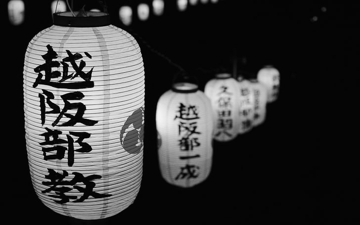
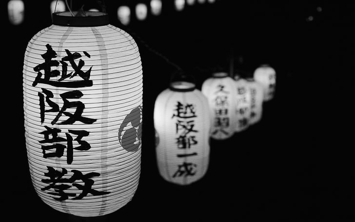

Japan, an East Asian archipelago, seamlessly fuses ancient traditions with modern innovation. Renowned for its sushi, cherry blossoms, and technological prowess, the country offers a captivating blend of history, culture, and natural beauty.
Japan, an East Asian archipelago, seamlessly fuses ancient traditions with modern innovation. Renowned for its sushi, cherry blossoms, and technological prowess, the country offers a captivating blend of history, culture, and natural beauty.
.
HISTORY
Japan's history is a tapestry of ancient traditions and rapid modernization. Its roots can be traced back to prehistoric times, evolving through the Yayoi and Asuka periods. The Heian era brought forth a cultural zenith, with the capital moved to Kyoto. The rise of the samurai during the Kamakura and Muromachi periods set the stage for feudal Japan.
The Meiji Restoration in 1868 propelled Japan into modernity, transforming it into an industrial power. In the Heisei and Reiwa eras, Japan maintained its status as a technological and cultural force. From ancient rituals to cutting-edge innovation, Japan's history reflects a captivating blend of tradition and progress.
Japanese is spoken by around 128 million people in Japan and globally. It uses a unique writing system with kanji, hiragana, and katakana. Japanese lacks grammatical gender, and word order is subject-object-verb. Politeness levels vary based on social context, and honorifics play a crucial role.

.
CULTURE
Japanese culture blends ancient traditions with modern influences. It features traditional arts, tea ceremonies, Shinto, and Buddhist practices. Renowned for its cuisine and distinctive fashion, Japan also embraces pop culture, including anime and manga.
Japanese culture, deeply rooted in history, emphasizes values like respect and harmony. The coexistence of traditional rituals with cutting-edge trends reflects the dynamic nature of Japan's cultural landscape.
 
